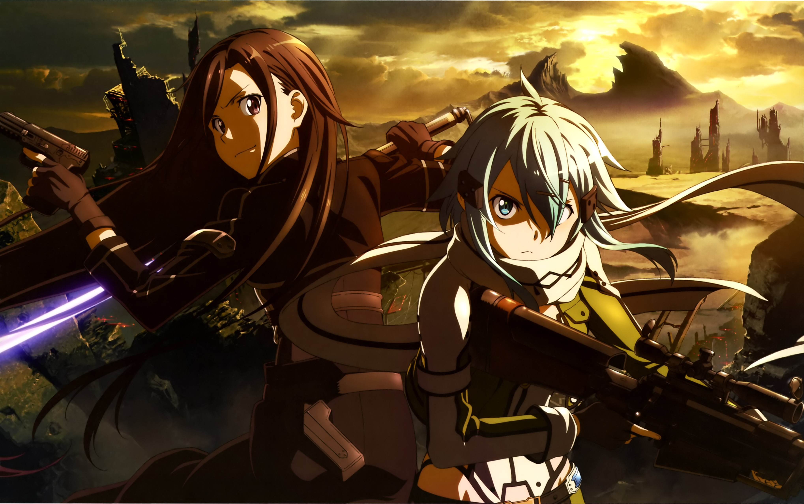

The Next Chapter
The second season of the Sword Art Online anime television series, titled Sword Art Online II, based on the light novel series written by Reki Kawahara and illustrated by Abec, was produced by A-1 Pictures and directed by Tomohiko Itō. It is divided into the story arc "Phantom Bullet" which adapts volumes 5/6 and the side stories "Calibur" and "Mother's Rosario" which are respectively adapted from volume 7 and 8 of the light novel. The episodes are each 23 minutes in length and adapts Kawahara's light novels from the fifth through the seventh volumes as well as parts of the eighth volume. The story of the second season follows Kazuto "Kirito" Kirigaya as he plays the new virtual reality game called "Gun Gale Online", where he allies himself with a girl named Shino "Sinon" Asada and enters a tournament to investigate a player known only as "Death Gun", who has the ability to kill a person in the real world by killing their virtual avatar. Kirito and his friends return to "Alfheim Online", Which was revived when Kirito was given the world seed, to retrieve the Holy Sword Excalibur from Thrym, the King of the Frost Giants, in order to restore the city of Jötunheimr back to its former glory. Asuna befriends a girl named Yuuki Konno, leader of the Sleeping Knights, who asks Asuna to join them in one last quest together. However, Asuna later discovers that Yuuki is suffering from a terminal illness and does not have very long to live.
